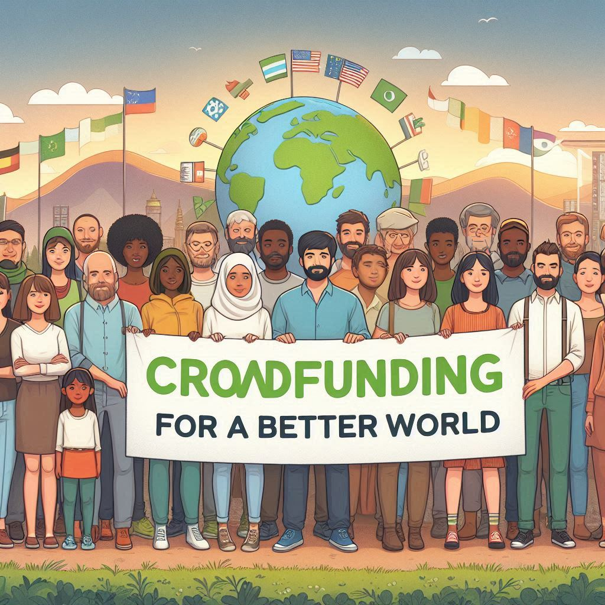
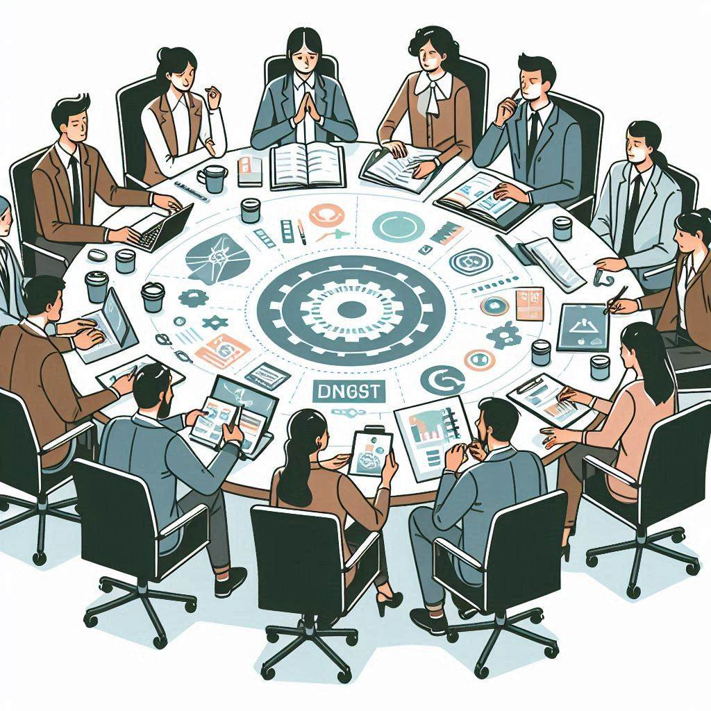
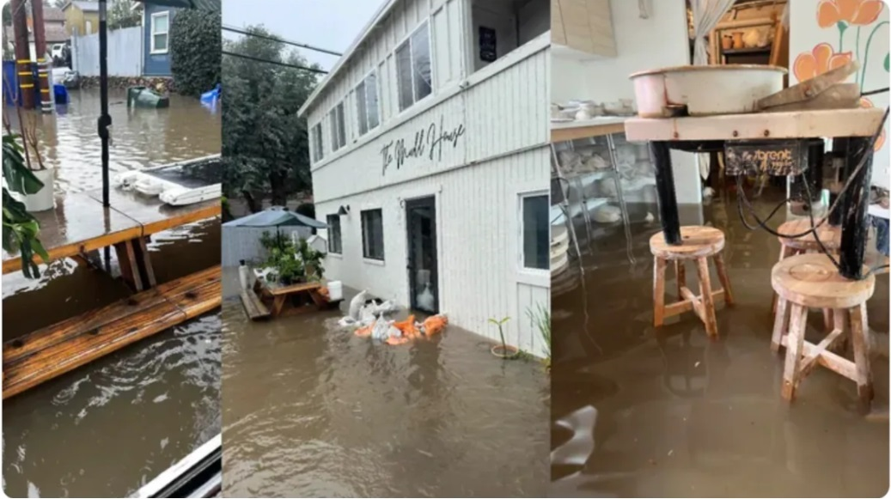

ACERCA DE NOSOTROS
Somos una empresa que permite a usuarios de diferentes partes del mundo crear sus propios crowdfunding con la intención de darles la oportunidad a diferentes personas que buscan ayudar de manera segura.
Objetivo
Nuestro objetivo es llegar a cada rincón del mundo que necesite ayuda y a quienes deseen ayudar, asegurando que sus fondos estén seguros y dándoles la libertad de crear sus propias campañas y promocionarlas.
Crowdfunding para recuperar y reparar The Mud House Studio
Se realizó un crowdfunding para reparar la famosa Mud House Studio.
Dale click para veisualizar más información
The Mud House Studio, un centro de arte y cultura en San José de Chimbo, Ecuador, necesita tu ayuda para recuperarse de un incendio en 2023. El incendio destruyó gran parte del estudio y dañó el equipo y las obras de arte. Se necesitan $10,000 para reparar la estructura, reemplazar los materiales dañados y comprar nuevos. The Mud House Studio ofrece un espacio para que los artistas locales puedan crear, exhibir y vender su trabajo. También brinda talleres y clases para la comunidad. Tu donación puede ayudar a que el estudio continúe siendo un recurso vital para la comunidad.
Opiniones
Usuario: María Vergara
Comentario:
Nos proporcionar ayuda para la colecta hacia las personas que lastimosamente perdieron sus casas a causa de las inundaciones en Ecuador.
Usuario: Jose Sánchez
Comentario:
Para ser la primera vez que uso un crowdfunding, aunque al principio desconfiaba, pero me ayudó demasiado en el momento que realmente estaba pasando por un problema de salud grave y necesitaba ayuda para los costosos médicamentos.